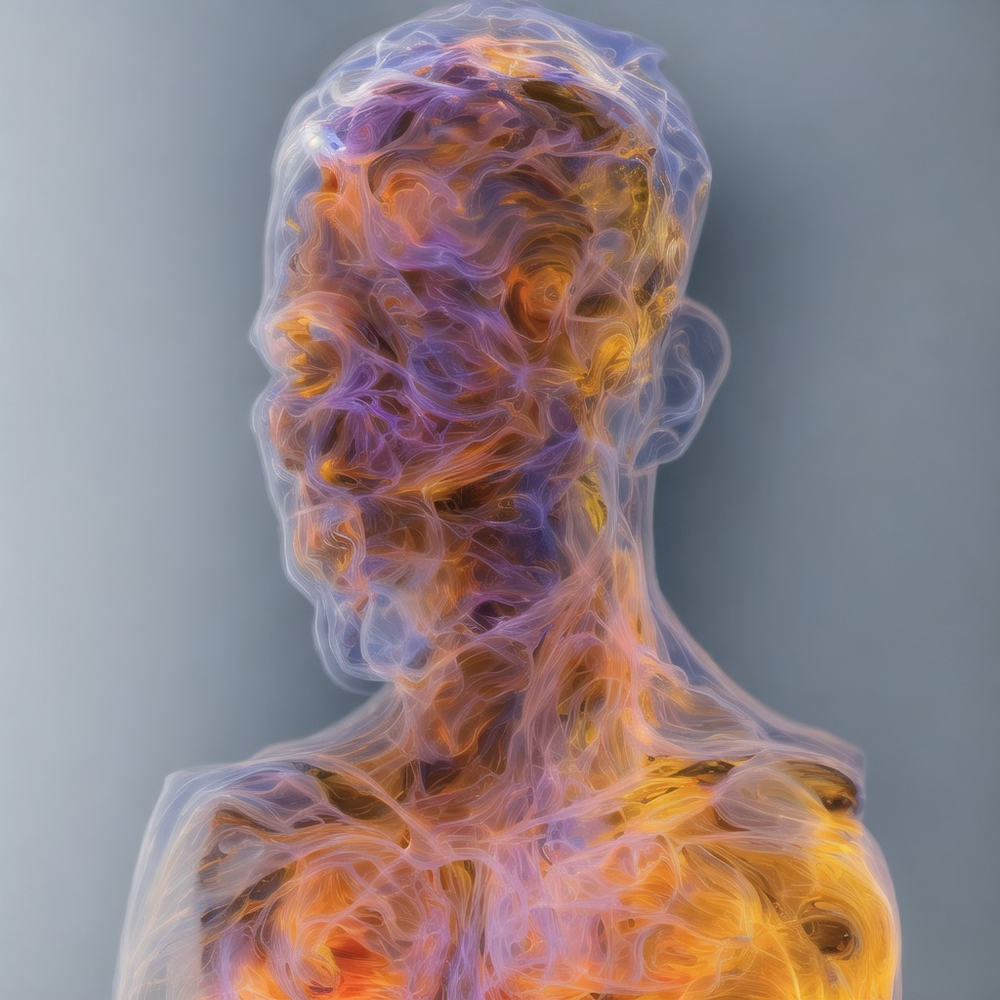
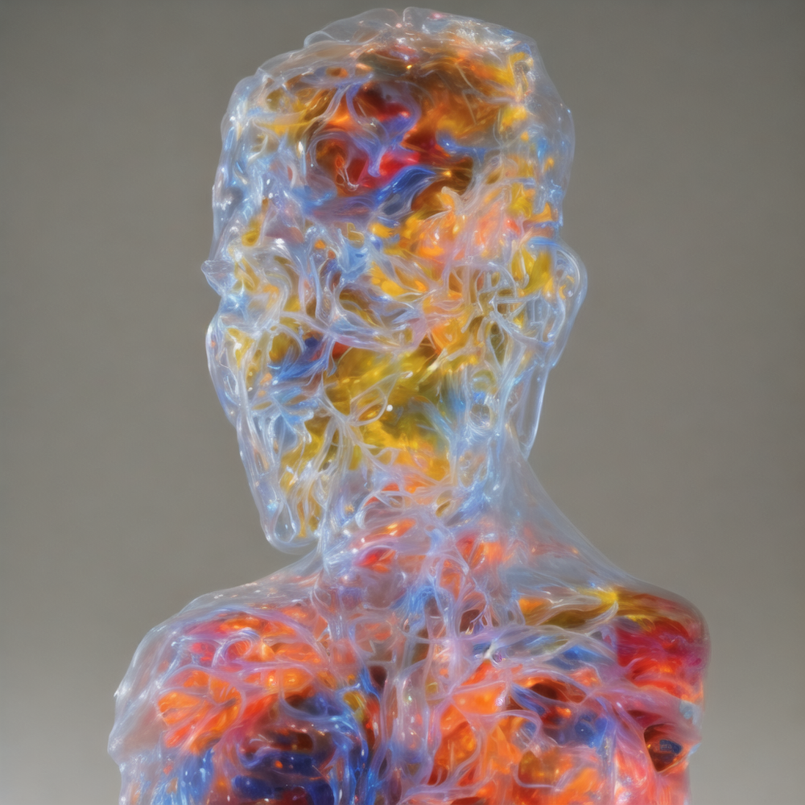
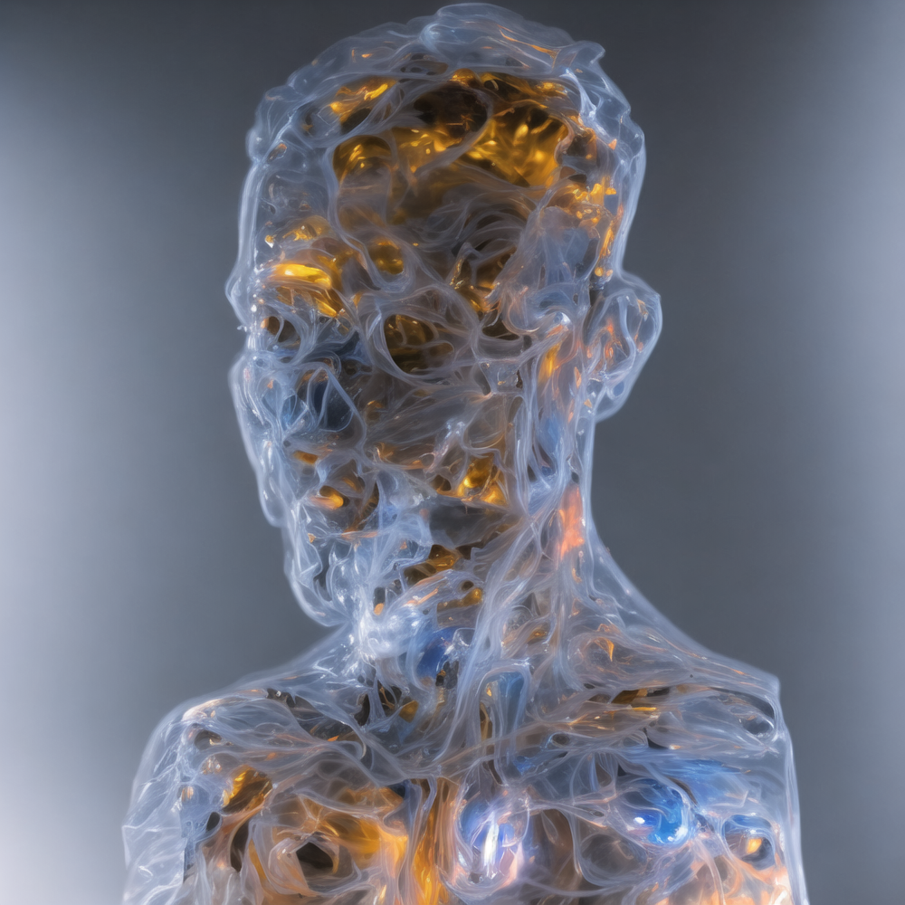
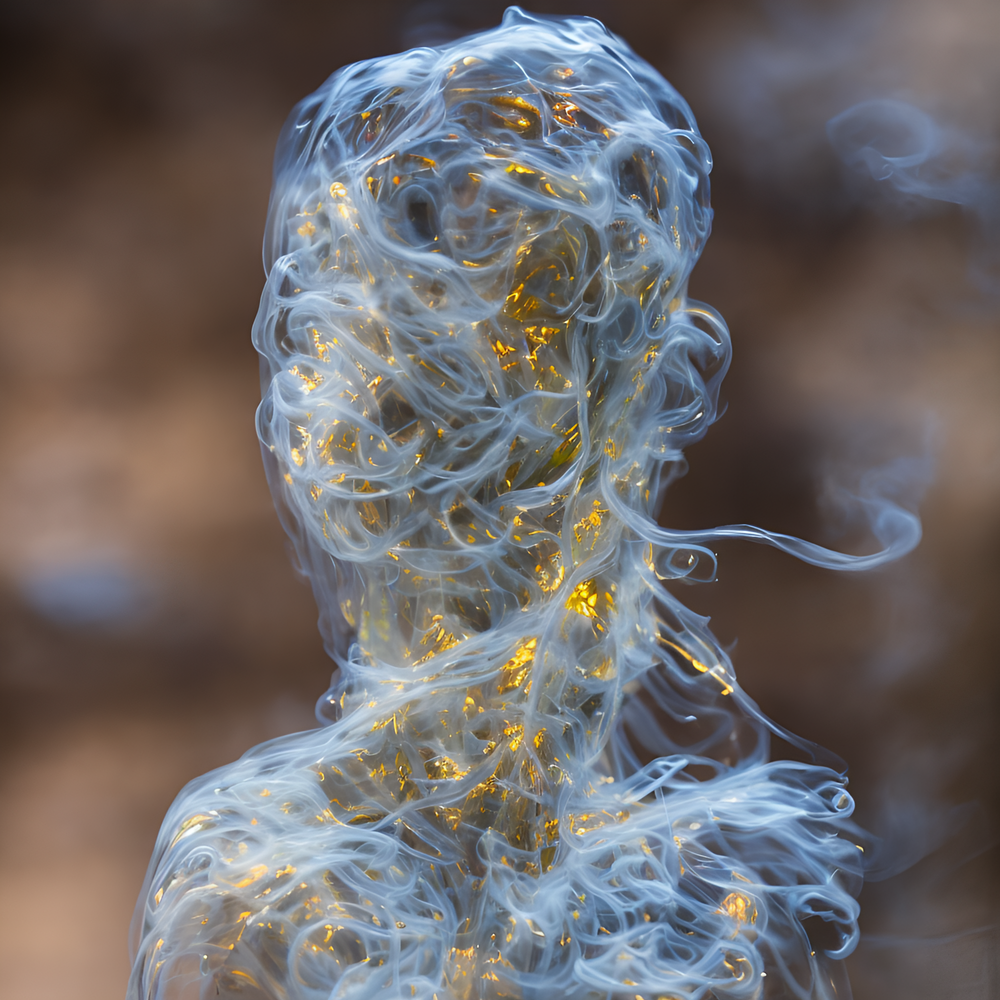
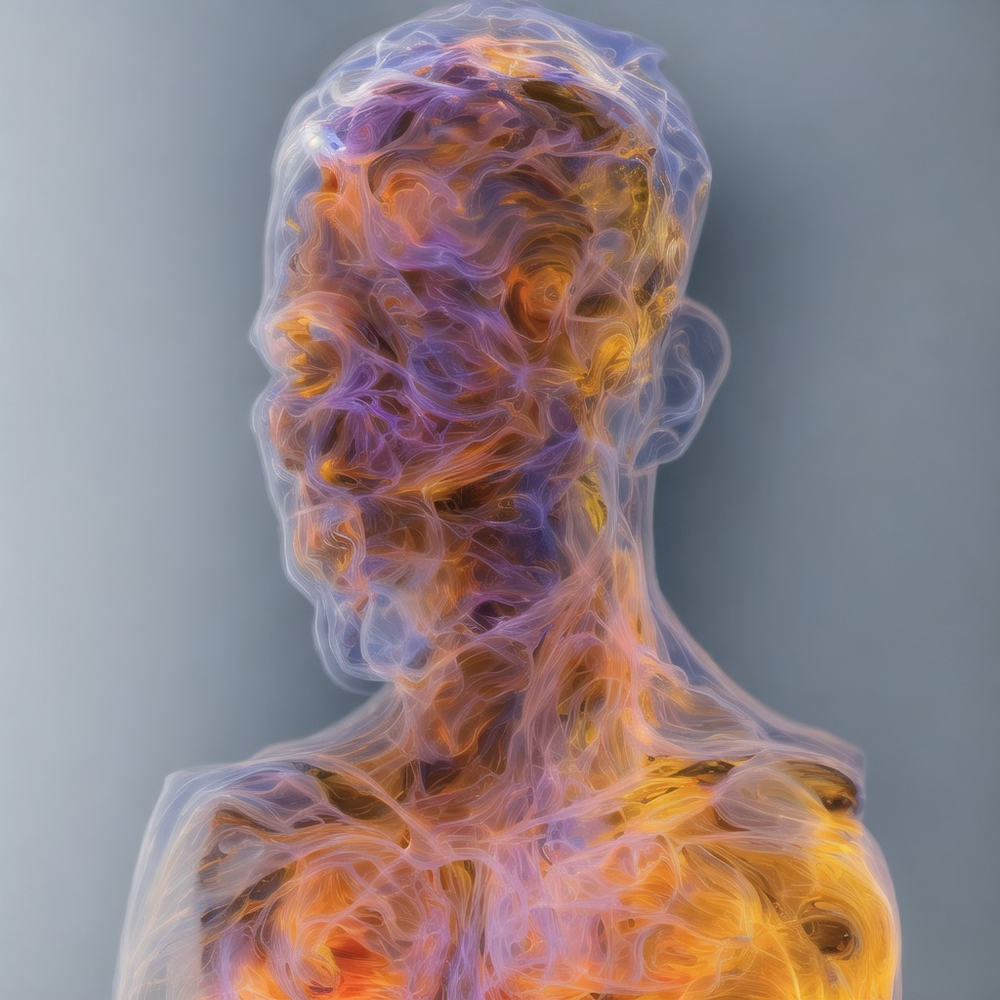
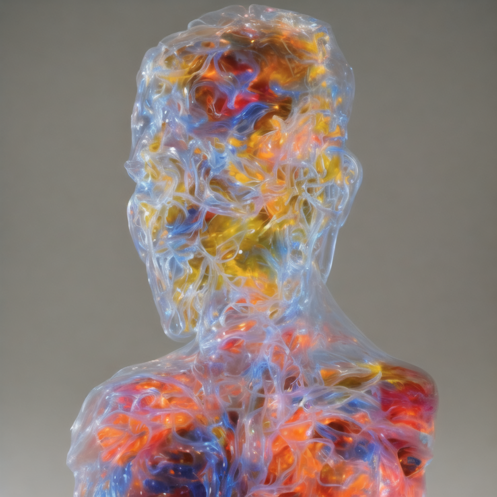
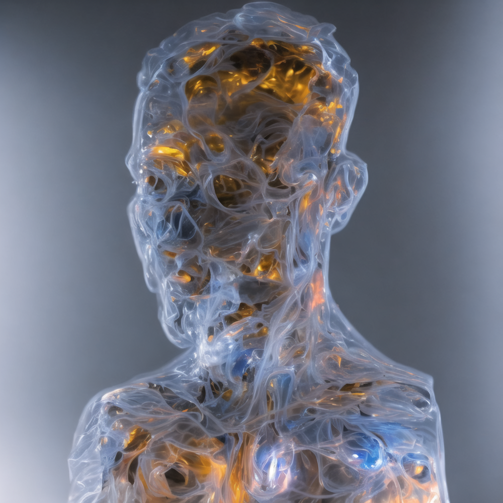
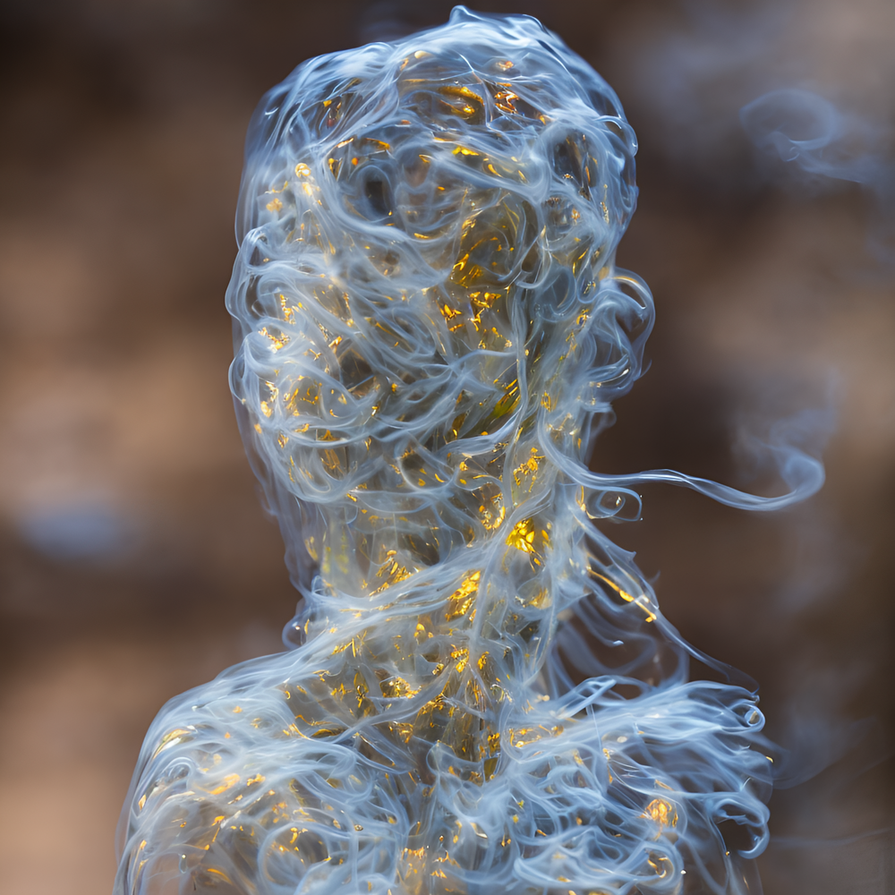

Meditation profoundly affected me; transcending debilitating depression into vibrant awareness, acceptance, and fuller reality.
Explore and reflect on your own insights in a direct participatory experience to co-create this artwork.
Immerse and engage to reveal your deepest reality
Locus is an artwork in development – immersive digital meditative experiences that you explore and create by embodied interaction.
The art flows with your motions, still reflection reveals insights – as calm water is clearer, you see deeper intricacies within.
Support our team bringing the project to life to become part of the artwork – an installation, free online exhibit, and collectible editions.
— created by epok.tech
Explore
Explore the installation mockup, drag to move around the space, open points-of-interest marked with + scrollLocus is an artwork in progress
Designed to engage audiences in embodied experiences of meditation, it’s being developed for exhibition – as an installation, a free online experience, and a series of unique edition NFTs.
Concept and aesthetic
Millions of fluid particles pass through a translucent human bust – their colours match the anatomy they flow within (skin, bone, tissue), tracing ephemeral hints of forms and colours layered within the volume’s depths.
Reflecting on this fluid motion elicits a meditation on our own subjective sensations (bodily, cognitive, emotional) – each organic, dynamic, interconnected, emergent phenomena.
Meditation can’t be truly be known conceptually or discursively, only by direct participatory experience – instilled here by interactive real-time visuals, physics, audio.
The bust and internal anatomy, clear glass sculptures where particles trace colours, are 3D volumes of Signed-Distance Fields.
The bust forms a hyper-realistic 3D scan of your face using Gaussian Splatting technology.
Interact by your natural motion
Your natural motions affect the flow – activity agitates turbulence to cloud outer surfaces; stillness settles smooth forms to reveal intricate inner depths.
In this way the artwork reveals itself by your still mindful reflection, in contrast to busy activity – as calm water is clearer than an agitated surface, you see more deeply within.
Your body’s intuitive motion affects the artwork via its camera:
Optical-flow tracks any motions to influence particle flows.
AI body-tracking mirrors your viewpoint by the turn of your head and lets you slice the visuals along your palm’s surface.
Peer into the flow explores AI face-tracking interactions to intuitively mirror your viewpoint – in an NFT series of interactive sketches supporting and prototyping parts of Locus, our crowdfund backers are rewarded with a random edition.
Emergent immersive audio
Flowing particles generate audio in real-time, spatially-mapped to speakers enclosing the space – individual particle sounds culminate into an immersive collective sound; as the sound of wind moving a leaf is to that of a forest.
Dynamically driving sound by the emergent motions of millions of interacting particles in an experimental process – we explore the potential of procedural audio to create aleatoric music.
Hear how aleatoric music can be composed in an emergent process.
Motion and fluid dynamics
The hyper-realistic fluid dynamics are driven by Material Point Method simulation – a cutting-edge physics method handling multiple forms of matter interacting in one model.
Locus will adapt MPM technology for real-time fluid-dynamics on web-platforms – from its origins in high-end film and game fields – and release it as Open-Source Software.
See how MPM simulates hyper-realistic physics here, here, and here.
Exhibited in complementary formats
Physical installation:
The main exhibit; a projection on a large circular screen, parting the space between observers and a participant interacting via camera, enclosed by an array of immersive-audio speakers.
The installation can adapt to most indoor or outdoor spaces, using tensioned-cables to suspend the main physical structures (screen, projectors, speakers) from any elevated anchors.
It can be a smaller scale (a disc-shaped screen for one projection) or larger (a curtain screen for multiple projections together).
Online digital:
The free and open exhibit; explored freely anywhere by anyone on their own web-devices, supporting equity of access to the artwork.
Collectible editions:
An NFT series spanning the artwork’s range of aesthetics and themes; driven by on-chain data and collectors’ input.
Supporters and installation audiences earn rewards that interact with these NFT editions.
Embodying meditative experiences and exploring by interaction, artwork and audience affect each other in a truly reciprocal dialogue, to create the experience together.
Prototypes
Shadows touch across time
Shadows touch across time, an interactive artwork installation commissioned by Olta and Arweave, for exhibition at Arweave Day 2025 conference in Berlin.
People connect across time through gestures, an emergent collaboration co-creating the artwork.
The fluid flows with your motions, your hand is a print made of solid particles; occasionally trails of other handprints appear, shadows left by those before you – if your hand touches theirs before they dissolve, your handprint is traced into the artwork, another shadow for a future person to touch.
Together, hands connect across the artwork, as you respond to each others’ gestures in a discourse, your shadows touch across time.
Combines and develops the fluid-dynamics and AI hand-tracking elements of Locus into a different creative execution – try it with the camera enabled.
Integrates AI hand-tracking to capture traces of audience hand gestures and drive this dialogue.
Integrates gl-mpm and glsl-optical-flow for fluid-dynamics simulation and natural-motion interaction via camera to influence it.
Gaussian-Splatting
Adapting Gaussian-Splatting with custom real-time rendering and animation, to integrate hyper-realistic 3D face models of audiences directly into the Locus artwork.
This will reflect your likeness faithfully in the visuals, mirror you and deepen your personal connection with your experience, and gather an archive of all the varied participants and supporters of this project.
Using Gaussian Splatting, a new hyper-realistic 3D scanning technology, we’ll process a video or images of your face at different angles to generate a physically-realistic 3D reconstruction,integrated into the artwork.
Material Point Method
Work-in-progress developing gl-mpm, the Material Point Method fluid-dynamics technology for Locus, and a cutting-edge physics simulation handling multiple forms of matter interacting in one model.
Implementing the MLS-MPM physics model, with ASFLIP integration, supporting WebGL 1.0, particle-based physics and rendering, real-time, natural-motion interaction – try it with the camera enabled.
So far 2D not 3D, fluid-dynamics not yet other materials, up to AFLIP not yet ASFLIP, basic rendering, uniform grid not yet hierarchical SPGrid.
Integrates gl-gpgpu to simulate all the physics and several other aspects, while supporting WebGL 1.0 for equity of access on many devices.
Integrates glsl-optical-flow for natural-motion interaction via camera to affect fluid particle flow.
Generously advised by leading academic researcher Raymond Yun Fei PhD.
Aleatoric immersive audio
Exploring and prototyping the aleatoric audio process – it will be driven by the emergent fluid motions of millions of particles, each individual influence accumulated to generate a collective sound, played across many-channel audio enclosing the space and immersing the audience.
Morgan Carparelli – the sound-engineer for Locus, coming from the world of high-end film, television, and game audio – iterated this concept into this early prototype, where many spatialised audio sources are driven along parametric curves and synths are driven by overlapping inputs.
This prototype is built with Iannix, Reaper, and PureData – to be ported into JavaScript, WebAudio, and WebGL as we progress the audio process and musical qualities.
Peer into the flow
Developed Peer into the flow, an artwork series supporting Locus – integrating GPU particle simulation and rendering, and AI face-tracking technology.
Your touch or cursor influence the particles, while the view mirrors the turn of your head via AI face-tracking – try it with the camera enabled.
Released as a series of NFT editions on Olta and OpenSea, to raise collector funds for Locus development.
Integrates gl-gpgpu to simulate all the physics and several other aspects, while supporting WebGL 1.0 for equity of access on many devices.
Integrates AI face-tracking for natural-motion interaction via camera to control the viewpoint.
GPGPU
Developed gl-gpgpu, a General-Processing GPU or GPGPU tool – useful for computationally intensive tasks like real-time physics and particle systems, of which Locus has many.
Provides equity of access to Locus, with high-performance parallel-computation of complex systems not reliant on the availability of compute-shaders or WebGPU – just WebGL 1.0, available on most devices audiences may own personally, not only high-end devices in custom installations.
Developed for optimal computation on the GPU via WebGL 1.0 and GLSL, and published Open-Source.
Optical-Flow
Developed glsl-optical-flow, an Optical-Flow Computer-Vision method for natural-motion interaction via video – try it with the camera enabled.
This natural-motion interaction embraces myriad kinds of people, forms, movements, abilities, appearances, and environments – intuitively and in real-time.
Developed to run optimally on the GPU via GLSL, and published Open-Source.
Concept
Hand-drawn concept art sketches exploring each aspect of the artwork aesthetic.
In this demo we explore the concept layer by layer – slide across it to peel through and expand:
- the surface of the bust reflecting your own appearance
- the translucent anatomical forms visible throughout and within
- the anatomy blended with fluid particles matching their colours
- the flowing particles alone tracing just hints of the anatomy
Following these are AI-generated variations, exploring a wider space of diverse potential aesthetics.
This concept emerged from my own experiences with meditation – the process and practice expressed allegorically to evoke similar experiences in me and others.
I set out from this point with the aim of engaging other people in an experience which helped me establish a resilient foundation and balanced outlook in my life – expressed wordlessly and experientially, directly subjective not prescriptively descriptive.


    
    An artwork engaging your conscious exploration of awareness and sensation, to release attachments, face aversions, and perceive and attune to clearest reality.
Inspiration
Examples of key aesthetic elements of Locus:
Fluid particles, fluid dynamics physics simulation, translucent 3D volumes.
The Locus concept art sketch blends these elements together.


Material Point Method simulation of fluid particles by Grant Kot. 


Progress
Team and partners
We’ve assembled talented people into a multi-disciplinary creative team to bring this project to life:
- Creative Consultant, Technical Producer, Designers, Photographers, Public Engagement Consultant.
- Sound-Designer and Musician collaborating on experimental generative sound.
- Steel & Form metalwork studio for set-design and fabrication.
- Innovation Creative Director support by Amplify creative agency.
- Meditation Consultant, interviewing other meditative practitioners and audiences to keep this artistic interpretation authentic.
Milestones reached
- Deeply researched and prototyped key elements:
Material Point Method,Signed-Distance Fields; and related methods. - Further developed more complete prototypes:
Optical-Flow,AIface-tracking,GPU-optimised real-time simulation; and split parts into smaller art projects supporting this main artwork. - Completed the detailed production timeline and budget.
Exhibitions confirmed and expected
- BETA Festival in Dublin, Ireland.
- Peckham Digital in London, United Kingdom.
- Among others expecting confirmation…